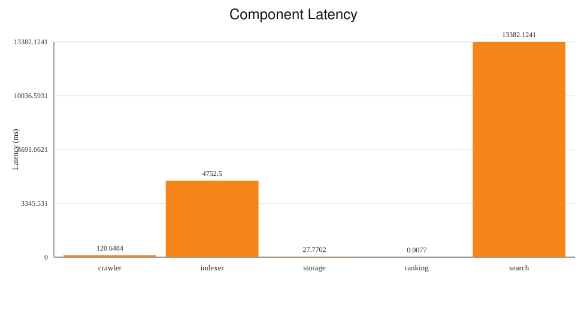
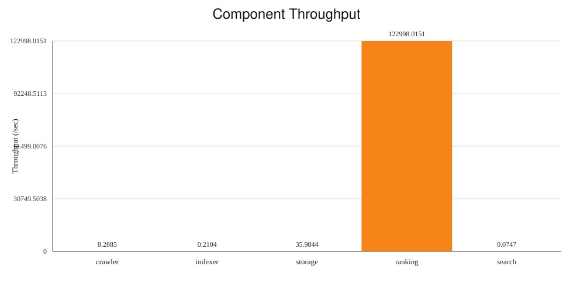

M6 Component Performance Results
Generated: 2026-04-21T08:20:06.415Z | Result dir: /Users/peterpopescu/classes/csci1380/csci1380_distributed_crawler/results/perf/m6_scaling_20260421_032502/n3_r2/benchmark/scale_m6_scaling_20260421_032502_n3_r2_20260421_041559
Latency

Throughput

Metrics Table
| Component | Latency (ms) | Throughput (/sec) | Samples | Unit |
|---|
| crawler | 120.6484 | 8.2885 | 1024 | pages/s |
| indexer | 4752.5 | 0.2104 | 10 | docs/s |
| storage | 27.7702 | 35.9844 | 100 | ops/s |
| ranking | 0.0077 | 122998.0151 | 80 | rankings/s |
| search | 13382.1241 | 0.0747 | 4 | queries/s |